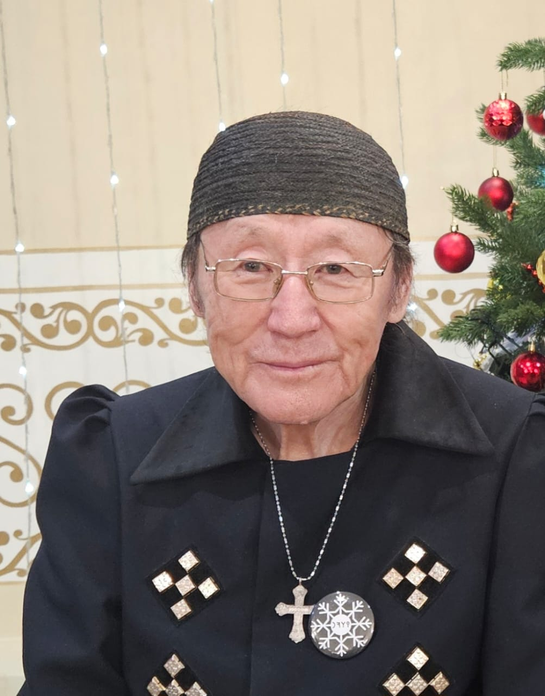

Метод, используемый в данном боте, основан на работах Андрея Ивановича Кривошапкина (Айыңа).
Айыңа посвятил многие годы изучению древнетюркской гадательной книги «Ирк Битиг», рунических знаков и их интерпретации. На основе собственных исследований он разработал авторскую систему работы с комбинациями рун, четырёхгранными палочками и связанными с ними символическими значениями.
При жизни Айыңа передавал свои знания ученикам и стремился сделать метод доступным для людей, интересующихся традиционной культурой и духовным наслевием народа саха.
После ухода автора его ученики продолжают изучать, сохранять и распространять полученные знания.
Данный бот создан как цифровой инструмент для знакомства с методом Айыңа и сохранения его наследия для будущих поколений.